<div id="youtube_embed_player" class="hideNoVideo" style='pointer-events: none;'></div>
<div id="youtube_embed_player_cache"><div class="inner" onclick="togglePlay()"></div></div>
<div class="streamer_thumb" ></div>
<div class="streamer_data">
	<div style="padding-right: 60px">

		<div class="streamer_line_contener" onclick="moveVideo(event);">
			<div class="streamer_line">
				<div class="streamer_line_loaded hideNoVideo">
					<div class="streamer_line_current">
						<div class="streamer_pick"></div>
					</div>
				</div>
			</div>
		</div>

		<div class="stream_textdata">

			<div class="nowrap">
			<b><sv class='channel_name'>-</sv></b> <sv class='video_name'>-</sv>
			</div>

			<div class="stream_textdata_time">

				
				

				
				

				<sv class='current_time'>00:00</sv> / <sv class='total_time'>00:00</sv>&nbsp;&nbsp;&nbsp;<sv class='current_channel'></sv>
			</div>

		</div>

		<div class="stream_buttons">

			

			

			
			

			<!-- 
			 -->

			
			
			
			

			


		</div>

	</div>
</div>


<div class="stream_history">
	<div id="stream_history" class="historytoscroll" data-simplebar-direction="vertical">
	</div>
</div>

<script>

      var tag = document.createElement('script');

      tag.src = "https://www.youtube.com/iframe_api";
      var firstScriptTag = document.getElementsByTagName('script')[0];
      firstScriptTag.parentNode.insertBefore(tag, firstScriptTag);


      var player = null;
      function onYouTubeIframeAPIReady() {
    	  player = new YT.Player('youtube_embed_player', {
              height: '50',
              width: '50',
              videoId: "",
              playerVars: { 'autoplay': 1, 'controls': 0, 'disablekb': 1, 'showinfo': 0, 'rel': 0, 'modestbranding': 1 },
              events: {
                'onReady': onPlayerReady,
                'onStateChange': onPlayerStateChange
              }
            });
      }

      var ready = false;
      function onPlayerReady(){
    	  ready = true;
      }

      streamer_refresh = setInterval("");
      timeout = setTimeout("");
      eventData = 0;
      errorCount = 0;
      function setVideo(vId, img){

    	  if(!ready){
    		  setTimeout(function(){setVideo(vId, img);},2000);
    		  return;
    	  }

    	  player.loadVideoById(vId);

    	  clearInterval(streamer_refresh);
    	  streamer_refresh = setInterval(refreshLine, 200);

    	  $('.videoresult').removeClass("active");
    	  $('.videoid'+vId).addClass("active");

    	  $('.streamer_thumb').css({"background-image":"url('"+img+"')"});

    	  if(vId!=''){
    		  $('.hideNoVideo').show();
    	  }
    	  
    	  clearTimeout(timeout);
    	  timeout = setTimeout(function(){
    		  if(eventData == -1 && errorCount<10){
        		  StreamViewBridge.next();
        		  errorCount++;
        	  }else{
        		  errorCount = 0;
        	  }
    	  },1000);

      }
	  $('.hideNoVideo').hide();

      function formatTime(seconds){

    	  minutes = Math.floor(seconds/60);
    	  seconds = Math.floor(seconds-minutes*60);

    	  if(seconds<10){
    		  seconds = "0"+seconds;
    	  }

    	  return minutes + ":" + seconds;

      }

      var wantplay = true;
      function refreshLine(){

    	  if(wantplay){
    		  player.playVideo();
    		  $("#play_button").hide();
    		  $("#pause_button").show();
    		  $('.streamer_line_current').addClass('active');
    		  $('#play_button').addClass('active');
    		  $('#pause_button').removeClass('active');
    		  $('#youtube_embed_player_cache').removeClass('pause');
    	  }else{
    		  player.pauseVideo();
    		  $("#pause_button").hide();
    		  $("#play_button").show();
    		  $('.streamer_line_current').removeClass('active');
    		  $('#pause_button').addClass('active');
    		  $('#play_button').removeClass('active');
    		  $('#youtube_embed_player_cache').addClass('pause');
    	  }

    	  $(".streamer_data").find(".total_time").html(formatTime(player.getDuration()));
    	  $(".streamer_data").find(".current_time").html(formatTime(player.getCurrentTime()));

    	  percentLoaded = 100*player.getVideoLoadedFraction();
    	  percentReaded = 100*player.getCurrentTime()/player.getDuration();
    	  $(".streamer_data").find(".streamer_line_loaded").css({"width":percentLoaded+"%"});

    	  $(".streamer_data").find(".streamer_line_current").css({"width":percentReaded/(percentLoaded/100)+"%"});

      }
      function togglePlay(){
    	  if(!$('#youtube_embed_player_cache').hasClass('pause')){
    		  StreamViewBridge.pause();
    	  }else{
    		  StreamViewBridge.play();
    	  }
      }
      
	  
      function onPlayerStateChange(event) {
    	  if(event.data==1){
    		  $('.commentInLine').remove();
    		  showCommentsLine();
    	  }
    	  eventData = event.data;
      }

      var historyOpened = false;
      function openHistory(){
    	  historyOpened = !historyOpened;
    	  if(!historyOpened){
	    	  $('body').css({'left':'0px','padding-left':'0px'});
	    	  $('.stream_history').css({'right':'-230px'});
	    	  $('#history_button').removeClass("active");
	    	  $('#youtube_embed_player').removeClass("has_right_menu");
	    	  $('#youtube_embed_player_cache').removeClass("has_right_menu");
    	  }else{
	    	  $('body').css({'left':'-230px','padding-left':'230px'});
	    	  $('.stream_history').css({'right':'0px'});
	    	  $('#history_button').addClass("active");
	    	  $('#youtube_embed_player').addClass("has_right_menu");
	    	  $('#youtube_embed_player_cache').addClass("has_right_menu");
    	  }
      }

      function fullscreenMovie(){
    	  $("#youtube_embed_player").toggleClass("fullscreen");
		  $('#youtube_embed_player_cache').toggleClass('fullscreen');

		  $('.hideFullScreen').hide();
    	  $('.showFullScreen').show();
    	  
    	  if(!$("#youtube_embed_player").hasClass("fullscreen")){
	    	  $('#youtube_embed_player').removeClass("has_right_menu");
	    	  $('.hideFullScreen').show();
	    	  $('.showFullScreen').hide();
    	  }
      }
	  $('.showFullScreen').hide();

      function getPosition(el) {
    	  var xPosition = 0;
    	  var yPosition = 0;

    	  while (el) {
    	    if (el.tagName == "BODY") {
    	      var xScrollPos = el.scrollLeft || document.documentElement.scrollLeft;
    	      var yScrollPos = el.scrollTop || document.documentElement.scrollTop;

    	      xPosition += (el.offsetLeft - xScrollPos + el.clientLeft);
    	      yPosition += (el.offsetTop - yScrollPos + el.clientTop);
    	    } else {
    	      xPosition += (el.offsetLeft - el.scrollLeft + el.clientLeft);
    	      yPosition += (el.offsetTop - el.scrollTop + el.clientTop);
    	    }

    	    el = el.offsetParent;
    	  }
    	  return {
    	    x: xPosition,
    	    y: yPosition
    	  };
    	}

      function moveVideo(e){

    	  var xPosition = e.clientX;
   	      var yPosition = e.clientY;

   	   	  obj = $(".streamer_line").offset();
   	   	  w = $(".streamer_line").width();

   	   	  player.seekTo(((xPosition-obj.left)/w)*player.getDuration());

   	   	  refreshLine();

      }

      function likeState(value){

		  $('.like_button').attr('src','imgs/icons/like.png');
		  $('.dislike_button').attr('src','imgs/icons/dislike.png');
    	  if(value==1){
    		  $('.like_button').attr('src','imgs/icons/liked.png');
    	  }
    	  if(value==-1){
    		  $('.dislike_button').attr('src','imgs/icons/disliked.png');
    	  }

      }
     
      
      var commentsLine = {};
      function resetCommentLine(){
    	  commentsLine = {};
    	  $('.commentInLine').remove();
      }
      function addCommentOnLine(time, comment){
    	  commentsLine[time] = comment;
      }
      function showCommentsLine(){
    	  if(player==undefined){
    		  return;
    	  }
    	  maxTime = player.getDuration();
		  $.each(commentsLine, function(time,message){
			  percentage = 100*time/maxTime;
			  div = $("<div class='commentInLine'><div class='commentIcon tooltip' title='-'></div></div>");
			  $(div).css({"width":Math.min(percentage,99)+"%"});
			  $(div).find('.commentIcon').attr("title",message);
			  $(".streamer_line_contener").append(div);
		  });
      }

      </script>
<script>
        $(document).ready(function() {
            $('.tooltip').tooltipster({theme:'tooltipster-borderless'});
        });
    </script>
